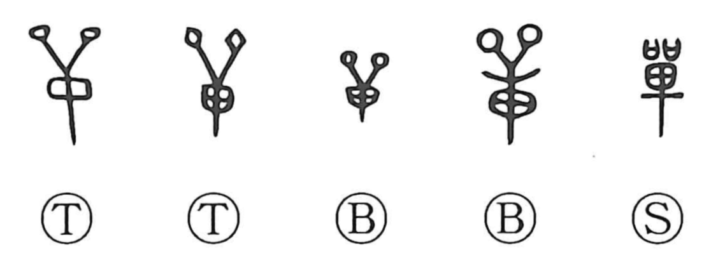

単

Kun: hitoe | On: tan
single ・ one ・ alone ・ to exhaust ・ all
Explanation
単 abbreviates 單, a picture of an oval shield with two feather ornaments above it. Shields belonged to both warfare and hunting. 戰 adds a weapon to the shield; the older hunting formation 獸 includes it with a dog.
A 單 was also a military unit. Three such units formed an army, so the word distinguished one body within a larger force. From the separate unit come one, single, and alone.
The uses extend to one person, a single course of action, or a single layer. A shield-shaped sign thus becomes the ordinary word for singularity through its place in military organization. The full 單 preserves more of the original equipment than modern 単.